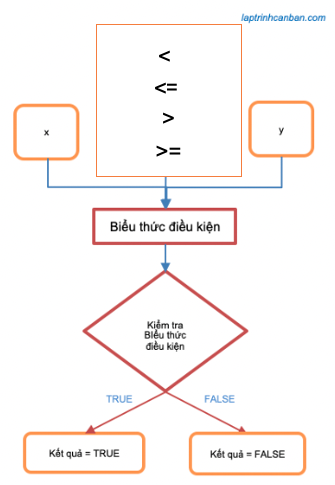

Hướng dẫn cách sử dụng toán tử so sánh trong JavaScript. Ở phần 1 này bạn sẽ học được các phép so sánh trong JavaScript được biểu diễn thông qua các toán tử quan hệ và ứng dụng chúng để so sánh 2 số trong JavaScript, so sánh 2 chuỗi trong JavaScript cũng như là phép so sánh số và chuỗi trong JavaScript.
Toán tử so sánh trong JavaScript
Toán tử so sánh trong JavaScript hay còn gọi là toán tử quan hệ, là các toán tử được đặt giữa 2 hạng tử và so sánh mối quan hệ giữa chúng trong JavaScript.
Để thực hiện các phép so sánh trong JavaScript, chúng ta sử dụng 4 loại toán tử quan hệ được liệt kê trong bảng dưới đây:
| Toán tử | Biểu thức điều kiện | Ý nghĩa |
|---|---|---|
| > | x > y | x lớn hơn y |
| >= | x >= y | x lớn hơn hoặc bằng y |
| < | x < y | x nhỏ hơn y |
| <= | x <= y | x nhỏ hơn hoặc bằng y |
Ngoài các toán tử so sánh lớn nhỏ này, chúng ta cũng sử dụng tới 4 loại toán tử so sánh bằng mà Kiyoshi đã giới thiệu trong bài Toán tử so sánh trong JavaScript (P2: so sánh bằng).
Phép so sánh trong JavaScript sẽ kết hợp toán tử so sánh cùng với hai giá trị ở hai vế trái phải thành một biểu thức điều kiện, sau đó kiểm tra biểu thức điều kiện này là đúng hay sai và đưa ra kết quả. Kết quả của các phép so sánh trong JavaScript sẽ là kiểu boolean trong JavaScript với hai giá trị là True (đúng) hoặc False (sai), và phép toán so sánh trong JavaScript được sử dụng để cấu tạo biểu thức điều kiện được sử dụng trong câu lệnh if trong JavaScript.

So sánh trong số JavaScript bằng toán tử so sánh
Toán tử lớn hơn (>)
Khi đặt giữa 2 số, toán tử lớn hơn (>) sẽ so sánh chúng với nhau và trả về true nếu số bên trái lớn hơn số bên phải.
console.log(5 > 10); |
Toán tử lớn hơn hoặc bằng (>=)
Khi đặt giữa 2 số, toán tử lớn hơn hoặc bằng (>=) sẽ so sánh chúng với nhau và trả về true nếu số bên trái lớn hơn hoặc bằng số bên phải.
console.log(5 >= 10); |
Toán tử nhỏ hơn (<)
Khi đặt giữa 2 số, toán tử nhỏ hơn (<) sẽ so sánh chúng với nhau và trả về true nếu số bên trái nhỏ hơn số bên phải.
console.log(5 < 10); |
Toán tử nhỏ hơn hoặc bằng (<=)
Khi đặt giữa 2 số, toán tử nhỏ hơn hoặc bằng (<=) sẽ so sánh chúng với nhau và trả về true nếu số bên trái nhỏ hơn hoặc bằng số bên phải.
console.log(5 <= 10); |
So sánh chuỗi trong JavaScript bằng toán tử so sánh
Khi sử dụng phép so sánh bằng để so sánh chuỗi JavaScript, chúng ta kiểm tra giá trị của chúng có bằng nhau hay không. Lưu ý là khi so sánh chuỗi trong JavaScript, chúng ta cần phân biệt giữa chữ hoa và chữ thường.
So sánh 2 ký tự trong JavaScript
Tương tự như với số thì chúng ta cũng sử dụng các toán tử so sánh để so sánh 2 ký tự trong JavaScript.
Tuy nhiên khác với so sánh giữa số thì về bản chất, khi so sánh giữa hai ký tự trong JavaScript, chương trình sẽ tiến hành so sánh mã ký tự Unicode giữa chúng.
- Để lấy mã ký tự Unicode của ký tự bất kỳ, chúng ta sử dụng tới codePointAt() đã được Kiyoshi giới thiệu trong bài Lấy điểm mã Unicode của ký tự trong chuỗi JavaScript (codePointAt)
Ví dụ, do mã ký tự Unicode của ký tự a là 97 sẽ lớn hơn của ký tự A là 65 nên phép so sánh sau sẽ cho ra kết quả True.
let unicodeValuea = 'a'.codePointAt(0); |
Kết quả:
Mã unicode của a: 97 |
So sánh 2 chuỗi string trong JavaScript
Một cách tương tự thì chúng ta cũng sử dụng các toán tử so sánh để so sánh 2 chuỗi string trong JavaScript.
Lưu ý khác với so sánh ký tự đơn thì khi so sánh 2 chuỗi string với nhau trong JavaScript, chương trình sẽ so sánh lần lượt mã ký tự Unicode của các cặp ký tự ở cùng vị trí giữa chúng.
Lúc này, phép so sánh sẽ bắt đầu từ cặp ký tự đầu tiên trong hai chuỗi, và nếu chúng giống nhau, các ký tự tiếp theo được so sánh cho tới khi xuất hiện một ký tự khác nhau đầu tiên trong hai chuỗi. Khi đó, mã ký tự Unicode của ký tự này sẽ đại diện cho cả chuỗi và được dùng để so sánh lớn nhỏ.
Ví dụ khi so sánh giữa 2 chuỗi string “Bac” và “BA” dưới đây, ký tự đầu tiên giữa chúng giống nhau, và ký tự thứ 2 là khác nhau, do đó kết quả so sánh giữa 2 ký tự thứ 2 là ‘a’ và ‘A’ sẽ đại diện cho kết quả so sánh giữa chúng.
let a = 'Bac', b = 'BA'; |
Kết quả:
Mã unicode của a: 97 |
So sánh giữa chuỗi và số trong JavaScript bằng toán tử so sánh
Trong trường hợp so sánh giữa chuỗi và số trong JavaScript, chuỗi sẽ được chuyển về kiểu số trước khi thực hiện phép so sánh với số còn lại.
Ví dụ cụ thể, chuỗi ‘12’ được chuyển thành số 12 và thực hiện phép so sánh như sau:
console.log('12' > 3); |
Tuy nhiên nếu chuỗi đã cho không thể chuyển về dạng số, kết quả phép chuyển về dạng số sẽ là NaN, dẫn đến phép so sánh sẽ trả về false như sau:
console.log('Tokyo' > 3); |
So sánh giữa số và các giá trị không phải chuỗi trong JavaScript
Trong JavaScript, có một số kiểu dữ liệu không thuộc kiểu chuỗi nhưng có thể được chuyển về dạng số như sau đây:
true 1
false 0
null 0
undefined NaN
Do vậy, khi so sánh chúng với số trong JavaScript, kết quả phép so sánh sẽ phụ thuộc vào kết quả chuyển kiểu dữ liệu về số của chúng.
Ví dụ cụ thể:
console.log(true > false); |
Tổng kết
Trên đây Kiyoshi đã hướng dẫn bạn về cách sử dụng các phép so sánh trong JavaScript được biểu diễn thông qua các toán tử so sánh trong JavaScript rồi. Để nắm rõ nội dung bài học hơn, bạn hãy thực hành viết lại các ví dụ của ngày hôm nay nhé.
Và hãy cùng tìm hiểu những kiến thức sâu hơn về JavaScript trong các bài học tiếp theo.
HOME>> học javascript - lập trình javascript cơ bản>>07. toán tử trong javascript